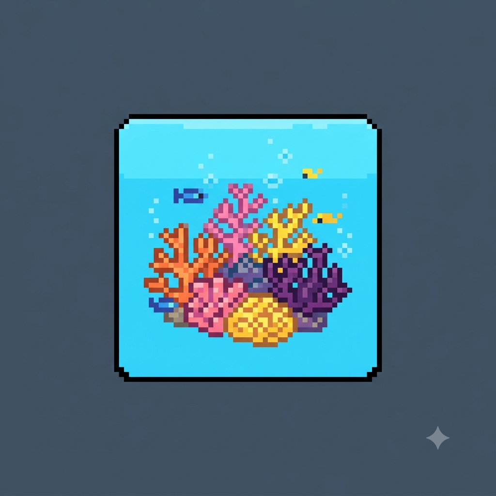
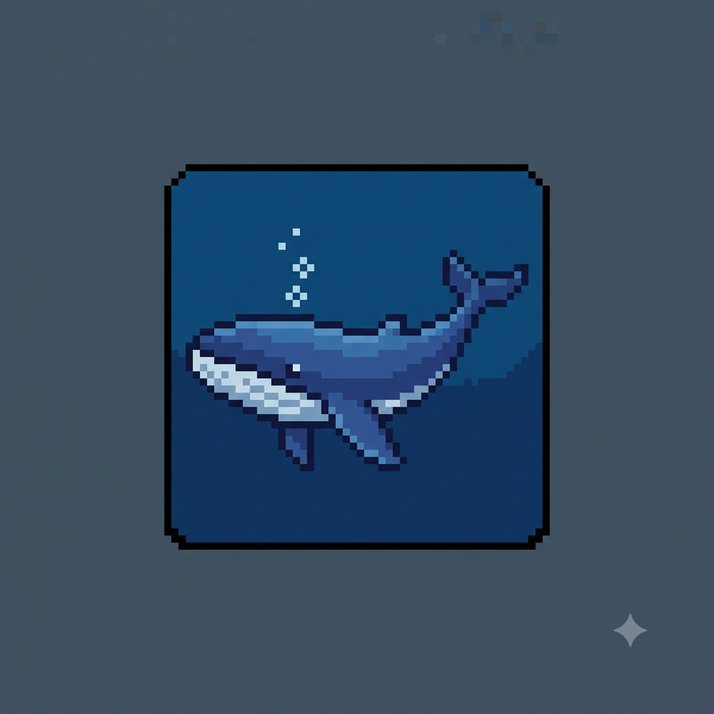
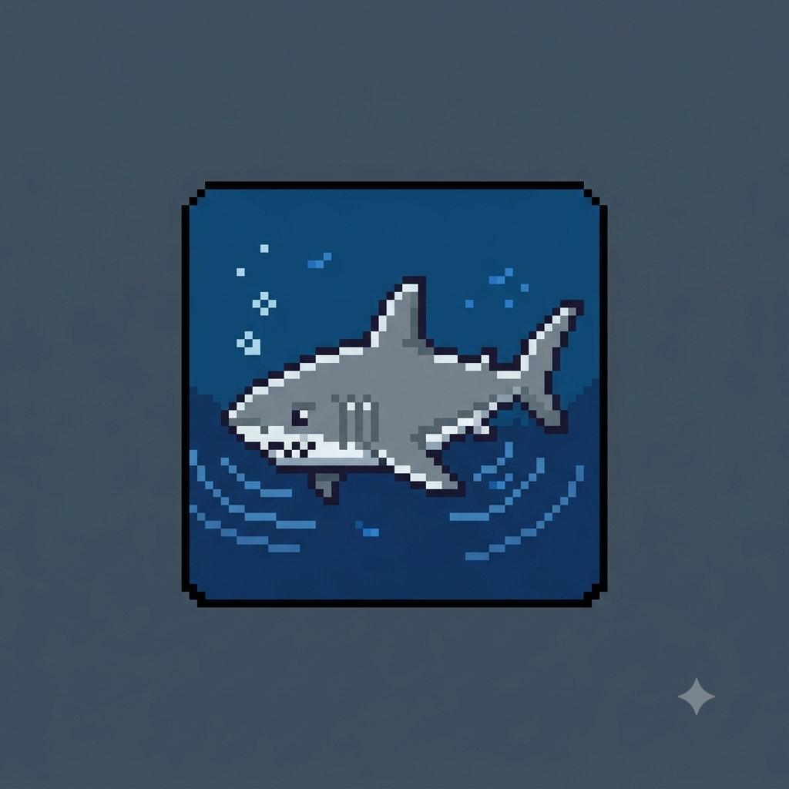
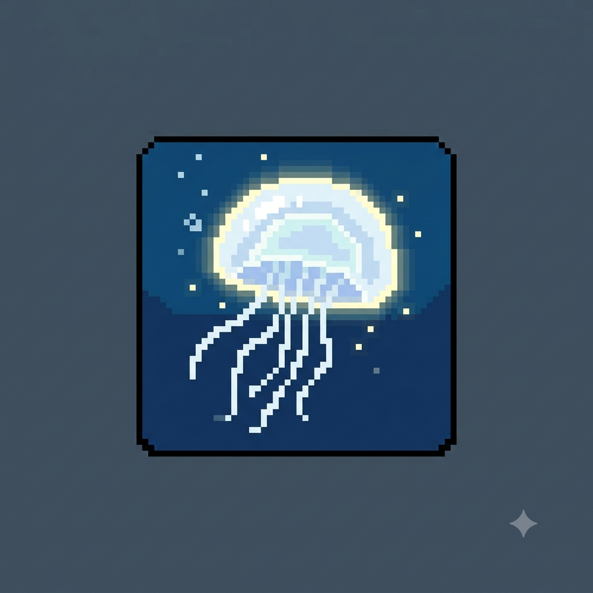
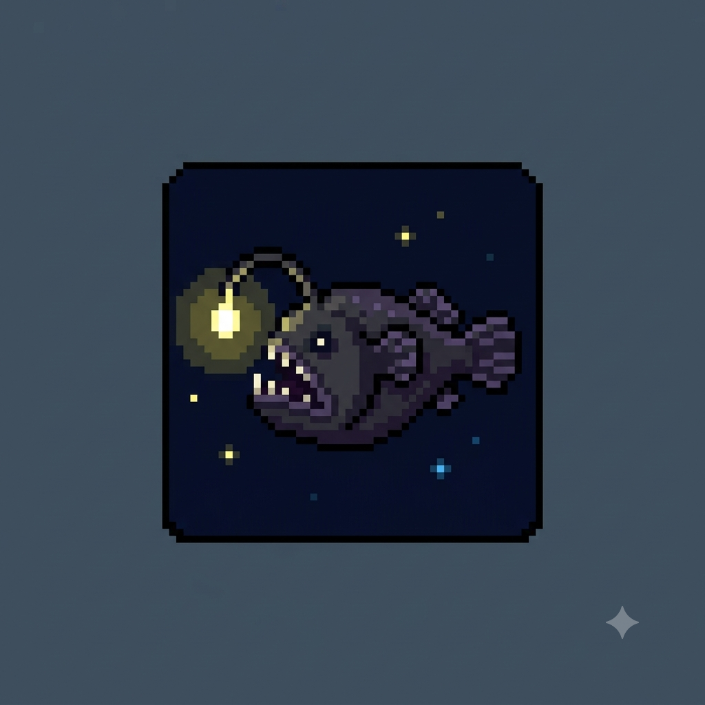
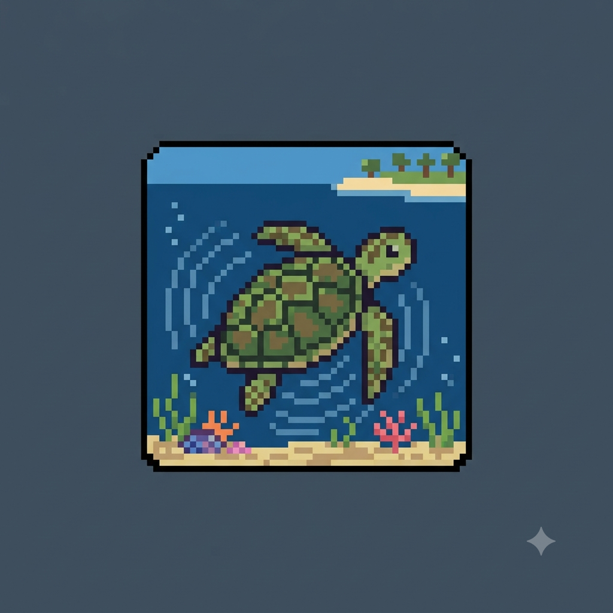

A Importância dos Recifes de Coral
Por: Nicolly Santos Cruz
Os recifes de coral cobrem menos de 1% do oceano, mas abrigam cerca de 25% de toda a vida marinha existente no planeta.
Fonte: WWF
Explorando os mistérios e as maravilhas dos oceanos

Por: Nicolly Santos Cruz
Os recifes de coral cobrem menos de 1% do oceano, mas abrigam cerca de 25% de toda a vida marinha existente no planeta.
Fonte: WWF

Por: Nicolly Santos Cruz
A baleia-azul é o maior animal que já existiu na Terra. Elas podem chegar a medir até 30 metros de comprimento e pesar cerca de 200 toneladas!
Fonte: National Geographic

Por: Nicolly Santos Cruz
Os tubarões conseguem detectar pequenas gotas de sangue na água a centenas de metros de distância graças ao seu olfato extremamente apurado.
Fonte: Ocean Conservancy

Por: Nicolly Santos Cruz
As águas-vivas habitam nossos oceanos há mais de 500 milhões de anos, tornando-as muito mais antigas que os próprios dinossauros.
Fonte: Smithsonian Institution

Por: Nicolly Santos Cruz
Nas profundezas do oceano, onde a luz do sol não chega, muitas criaturas utilizam a bioluminescência (luz própria) para caçar e se comunicar.
Fonte: Deep Sea Conservation

Por: Nicolly Santos Cruz
As tartarugas marinhas viajam milhares de quilômetros pelo oceano e conseguem retornar exatamente à mesma praia onde nasceram para pôr seus ovos.
Fonte: Projeto TAMAR